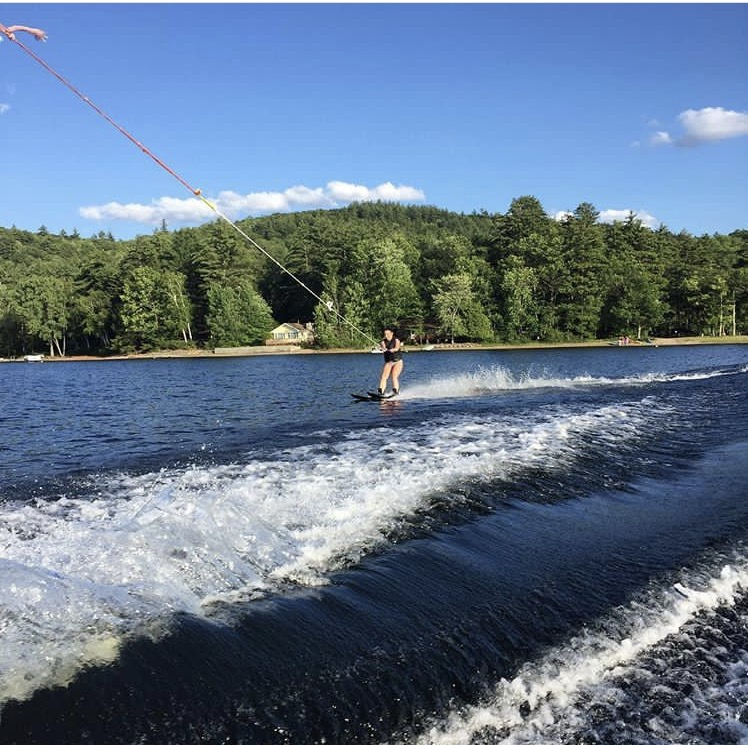
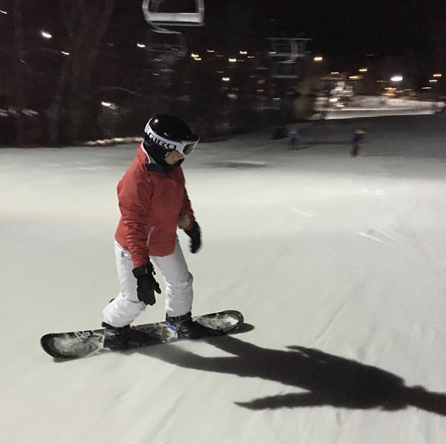

| Home | About Me | Favorite Activites | Favorite Things | Pictures |
|---|
I love to travel! I have never left the United States but I can not wait to! I have only traveled within New England and never taken a plane. I know, I have to live a little. My most extensive vacation was to Schroon Lake, New York. I stayed in a lake house for a week and loved it! There is where I learned to water ski. Water skiing is something I love to do because it is such an adrenaline rush, well at least for me.

I do love a great workout. When I was in Rhode Island my boyfriend and I went to the gym about five times a week. It was much easier then because we had such a good system. Now with moving up here, we are still working on it. I never once had a workout that I regret. I always felt so good after a workout.
I have recently learned to snowboard. Although at times it can be very scary, I love it! Especially at night with the lights lit on the mountain.

Some other activities I like is going to the beach. I am not a huge shopper because within two hours I am tired and ready for a nap. I do love to go to festivals. Back in Rhode Island, every year the town of Scituate would host an art festival. It had lots of food and shopping vendors. I probably liked it so much because it was during fall.